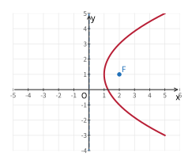
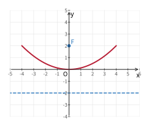
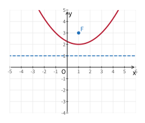

別冊練習問題 3 の解答 放物線（焦点と準線）
(1) 点 \(F(2,\ 1)\) からの距離と、直線 \(x=0\) からの距離が等しい点 \(P\) の軌跡の方程式を求めよ。
条件を式にする
動点 \(P(x,y)\) について、焦点 \(F\) までの距離 \(=\) 準線までの距離。
\[\sqrt{(x-\left(2\right))^2+(y-\left(1\right))^2}=|x-\left(0\right)|\]両辺を2乗する
\[(x-\left(2\right))^2+(y-\left(1\right))^2=(x)^2\]整理する
共通の2乗の項が消える。
\[(y-\left(1\right))^2=4(x-\left(1\right))\]頂点 \((1,\ 1)\)、\(p=1\)。

【答案】
\[(y-\left(1\right))^2=4(x-\left(1\right))\]答
(2) 点 \(F(0,\ 2)\) からの距離と、直線 \(y=-2\) からの距離が等しい点 \(P\) の軌跡の方程式を求めよ。
条件を式にする
動点 \(P(x,y)\) について、焦点 \(F\) までの距離 \(=\) 準線までの距離。
\[\sqrt{(x-\left(0\right))^2+(y-\left(2\right))^2}=|y-\left(-2\right)|\]両辺を2乗する
\[(x-\left(0\right))^2+(y-\left(2\right))^2=(y + 2)^2\]整理する
共通の2乗の項が消える。
\[(x-\left(0\right))^2=8(y-\left(0\right))\]頂点 \((0,\ 0)\)、\(p=2\)。

【答案】
\[(x-\left(0\right))^2=8(y-\left(0\right))\]答
(3) 点 \(F(1,\ 3)\) からの距離と、直線 \(y=1\) からの距離が等しい点 \(P\) の軌跡の方程式を求めよ。
条件を式にする
動点 \(P(x,y)\) について、焦点 \(F\) までの距離 \(=\) 準線までの距離。
\[\sqrt{(x-\left(1\right))^2+(y-\left(3\right))^2}=|y-\left(1\right)|\]両辺を2乗する
\[(x-\left(1\right))^2+(y-\left(3\right))^2=(y - 1)^2\]整理する
共通の2乗の項が消える。
\[(x-\left(1\right))^2=4(y-\left(2\right))\]頂点 \((1,\ 2)\)、\(p=1\)。

【答案】
\[(x-\left(1\right))^2=4(y-\left(2\right))\]答